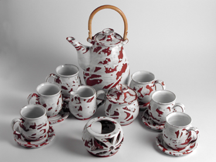
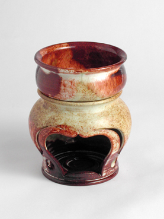
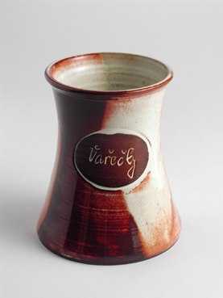

Sortiment
Sortiment für Zuhause, Geschenke und Sonderwünsche
Das Angebot umfasst Hunderte Produkte mit hohem Anteil an Handarbeit. Zusätzlich entstehen Werbekeramik, Firmenlogos und individuelle Motive auf Bestellung.

Teesets
Sets für ruhige Tischmomente, Teezeremonien und hochwertige Geschenke.

Tassen
Handgeformte Tassen für den Alltag und als beliebtes Geschenk.

Aromalampen und Kerzenständer
Keramik für Duft, Licht und wohnliche Atmosphäre.

Sonstiges
Ein vielfältiger Mix charakterstarker Stücke aus dem ursprünglichen Katalog.

Geschenke
Verspielte Keramikobjekte und kleine Stücke mit eigenem Charakter.

Spardosen und Aschenbecher
Traditionelle und ungewöhnliche Formen aus dem ursprünglichen Katalog.

Tischkeramik
Servierkeramik und Zubehör für den täglichen Gebrauch.

Kleinigkeiten
Kleine Keramikstücke als Geschenk, Detail oder dekorativer Akzent.

Küchenkeramik
Bräter, Dosen, Gewürzsets und weitere nützliche Stücke für Haus und Ferienhaus.

Für Herren
Geschenk- und Gebrauchskeramik mit kräftigerem, markanterem Charakter.

Für Damen
Feinere Formen, Aromakeramik und dekorative Stücke zum Verschenken.

Vasen
Glasierte Vasen und dekorative Gefäße für Innenräume und Arrangements.

Für Restaurants und Gaststätten
Robuste Keramik für Gastronomie und originelle Präsentation.

Speisesets
Abgestimmte Sets für ein einheitliches Tischbild.